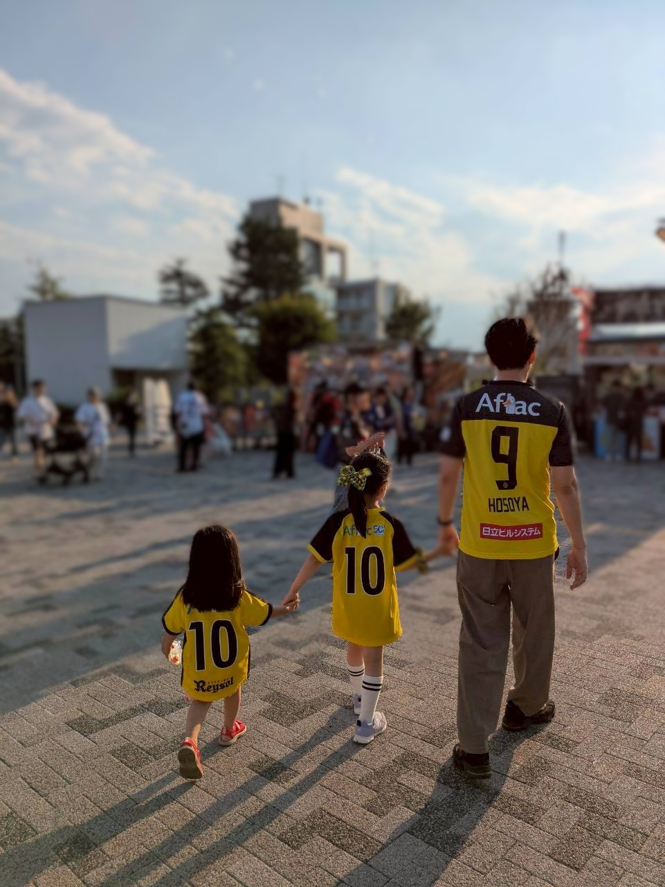

このたびチームに参画させていただく、松丸 祐樹と申します。フリーランスの IT エンジニアとして、企業の情報システム部門を支える BPOを専門に活動しています。
情シスの現場では「人手が足りない」「専門領域を任せたい」「進め方を整理したい」といった悩みがつきものです。まずは実際の環境を確認して状況を把握したうえで、手を動かす実務から、進め方の整理・調整までを幅広く担当します。難しい技術の話も、現場の言葉に翻訳して橋渡しすることを大切にしています。
気軽に声をかけていただける存在でありたいと思っています。分からないこと・困りごとがあれば、まずはお気軽にご相談ください。どうぞよろしくお願いします。
得意領域を3つにまとめました。この範囲であれば、日々の運用から立ち上げ・改善まで幅広くお任せいただけます。
アカウント・端末管理、条件付きアクセス、キッティング設計、Exchange / SharePoint / Teams の設定・トラブル対応まで。日々の情シス運用をまるごと支えます。
Azure を中心とした基盤の全体設計、Zero Trust・SASE を意識したセキュリティ強化。オンプレからクラウドまで、環境の立ち上げと見直しに対応します。
プロジェクトの進行管理、ドキュメント整備、IT ガバナンス。RPA・データ分析を使った業務効率化の企画から実行までサポートします。
大手人材会社、プロサッカーリーグ運営組織、自動車メーカー、IPO を見据えたベンチャーなど、多様なクライアントの情シス業務を支援。
10 社以上のクライアントを支援。BPO と業務改善の推進を通じて、幅広い業種の情シス現場を経験。
開発から運用保守まで一通りを担当。作る側・守る側の両方の目線を養う。
接客・店舗運営を通じてリーダーシップとコミュニケーションの土台を築く。IT 一辺倒でない現場感が強みです。
IPA（情報処理推進機構）
Microsoft
会計・お金まわりの基礎も理解
仕事の話だけでなく、こんな人間です。休憩時間の雑談ネタにでもしてもらえたら嬉しいです。
お気軽にご連絡ください。日本全国リモート対応可能です。
※ チャット（Teams / Slack 等）でのご連絡も歓迎です。気軽に声をかけてください。